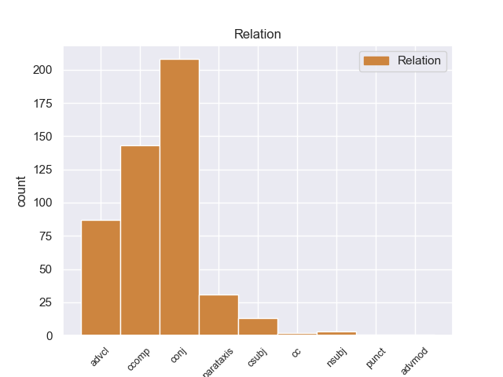
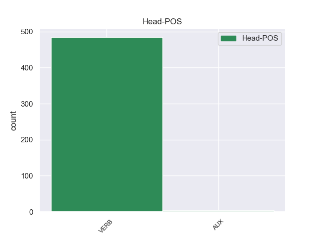
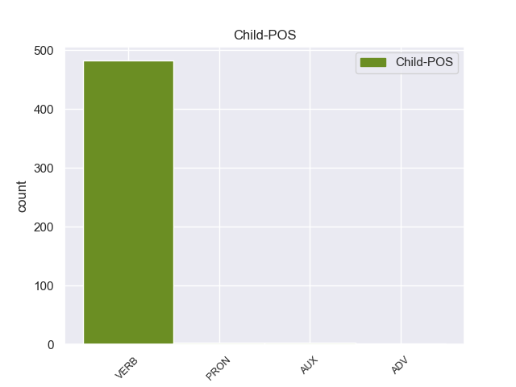

Distribution of features within this leaf



Agreement Rules sorted by frequency.
- When the dependent token is the conjunct(conj) of the head token,
1 Είναι _ _ _ _ 0 _ _ _
2 σημαντικό _ _ _ _ 0 _ _ _
3 να _ _ _ _ 0 _ _ _
4 υπογραμμίσω _ _ _ _ 0 _ _ _
5 το _ _ _ _ 0 _ _ _
6 γεγονός _ _ _ _ 0 _ _ _
7 ότι _ _ _ _ 0 _ _ _
8 και _ _ _ _ 0 _ _ _
9 οι _ _ _ _ 0 _ _ _
10 δύο _ _ _ _ 0 _ _ _
11 βουλευτές _ _ _ _ 0 _ _ _
12 διατρανώνουν διατρανώνο VERB _ Mood=Ind|Number=Plur|Person=3|Tense=Pres|VerbForm=Fin 0 _ _ _
13 σθεναρά _ _ _ _ 0 _ _ _
14 την _ _ _ _ 0 _ _ _
15 αθωότητά _ _ _ _ 0 _ _ _
16 τους _ _ _ _ 0 _ _ _
17 και _ _ _ _ 0 _ _ _
18 καταγγέλλουν καταγγέλλr VERB _ Mood=Ind|Number=Plur|Person=3|Tense=Past|VerbForm=Fin 12 conj _ _
19 αυτό _ _ _ _ 0 _ _ _
20 που _ _ _ _ 0 _ _ _
21 οι _ _ _ _ 0 _ _ _
22 ίδιοι _ _ _ _ 0 _ _ _
23 θεωρούν _ _ _ _ 0 _ _ _
24 καταχρήσεις _ _ _ _ 0 _ _ _
25 σ _ _ _ _ 0 _ _ _
26 τη _ _ _ _ 0 _ _ _
27 διαδικασία _ _ _ _ 0 _ _ _
28 δίωξης _ _ _ _ 0 _ _ _
29 . _ _ _ _ 0 _ _ _
1 Συνεπώς _ _ _ _ 0 _ _ _
2 , _ _ _ _ 0 _ _ _
3 η _ _ _ _ 0 _ _ _
4 παρούσα _ _ _ _ 0 _ _ _
5 αίτηση _ _ _ _ 0 _ _ _
6 άρσης _ _ _ _ 0 _ _ _
7 της _ _ _ _ 0 _ _ _
8 ασυλίας _ _ _ _ 0 _ _ _
9 δεν _ _ _ _ 0 _ _ _
10 αφορά αφοράr VERB _ Mood=Ind|Number=Sing|Person=3|Tense=Pres|VerbForm=Fin 0 _ _ _
11 το _ _ _ _ 0 _ _ _
12 ζήτημα _ _ _ _ 0 _ _ _
13 εάν _ _ _ _ 0 _ _ _
14 οι _ _ _ _ 0 _ _ _
15 διώξεις _ _ _ _ 0 _ _ _
16 μπορούν μπορο VERB _ Mood=Ind|Number=Plur|Person=3|Tense=Pres|VerbForm=Fin 10 ccomp _ _
17 ή _ _ _ _ 0 _ _ _
18 πρέπει _ _ _ _ 0 _ _ _
19 να _ _ _ _ 0 _ _ _
20 συνεχιστούν _ _ _ _ 0 _ _ _
21 με _ _ _ _ 0 _ _ _
22 βάση _ _ _ _ 0 _ _ _
23 το _ _ _ _ 0 _ _ _
24 γαλλικό _ _ _ _ 0 _ _ _
25 δίκαιο _ _ _ _ 0 _ _ _
26 . _ _ _ _ 0 _ _ _
1 Ευελπιστώ _ _ _ _ 0 _ _ _
2 ότι _ _ _ _ 0 _ _ _
3 η _ _ _ _ 0 _ _ _
4 απόφαση _ _ _ _ 0 _ _ _
5 αυτή _ _ _ _ 0 _ _ _
6 , _ _ _ _ 0 _ _ _
7 συμπεριλαμβανομένης _ _ _ _ 0 _ _ _
8 και _ _ _ _ 0 _ _ _
9 της _ _ _ _ 0 _ _ _
10 αιτιολογικής _ _ _ _ 0 _ _ _
11 έκθεσης _ _ _ _ 0 _ _ _
12 που _ _ _ _ 0 _ _ _
13 την _ _ _ _ 0 _ _ _
14 συνοδεύει _ _ _ _ 0 _ _ _
15 , _ _ _ _ 0 _ _ _
16 θα _ _ _ _ 0 _ _ _
17 διαβιβαστεί διαβιβαστr VERB _ Mood=Ind|Number=Sing|Person=3|Tense=Pres|VerbForm=Fin 0 _ _ _
18 σ _ _ _ _ 0 _ _ _
19 τις _ _ _ _ 0 _ _ _
20 γαλλικές _ _ _ _ 0 _ _ _
21 αρχές _ _ _ _ 0 _ _ _
22 , _ _ _ _ 0 _ _ _
23 εφόσον _ _ _ _ 0 _ _ _
24 υπερψηφιστεί υπερψηφιστr VERB _ Mood=Ind|Number=Sing|Person=3|Tense=Imp|VerbForm=Fin 17 advcl _ _
25 από _ _ _ _ 0 _ _ _
26 το _ _ _ _ 0 _ _ _
27 Κοινοβούλιο _ _ _ _ 0 _ _ _
28 . _ _ _ _ 0 _ _ _
1 Η _ _ _ _ 0 _ _ _
2 Αστυνομία _ _ _ _ 0 _ _ _
3 απέκλεισε απέκλεισar VERB _ Mood=Ind|Number=Sing|Person=3|Tense=Past|VerbForm=Fin 0 _ _ _
4 την _ _ _ _ 0 _ _ _
5 πόλη _ _ _ _ 0 _ _ _
6 με _ _ _ _ 0 _ _ _
7 σκοπό _ _ _ _ 0 _ _ _
8 να _ _ _ _ 0 _ _ _
9 βρεί _ _ _ _ 0 _ _ _
10 τους _ _ _ _ 0 _ _ _
11 κρατούμενους _ _ _ _ 0 _ _ _
12 και _ _ _ _ 0 _ _ _
13 να _ _ _ _ 0 _ _ _
14 τους _ _ _ _ 0 _ _ _
15 ξαναβάλει _ _ _ _ 0 _ _ _
16 σ _ _ _ _ 0 _ _ _
17 τη _ _ _ _ 0 _ _ _
18 φυλακή _ _ _ _ 0 _ _ _
19 » _ _ _ _ 0 _ _ _
20 , _ _ _ _ 0 _ _ _
21 δήλωσε δήλωσar VERB _ Mood=Ind|Number=Sing|Person=3|Tense=Past|VerbForm=Fin 3 parataxis _ _
22 εκπρόσωπος _ _ _ _ 0 _ _ _
23 των _ _ _ _ 0 _ _ _
24 τοπικών _ _ _ _ 0 _ _ _
25 αρχών _ _ _ _ 0 _ _ _
26 . _ _ _ _ 0 _ _ _
1 Δεν _ _ _ _ 0 _ _ _
2 πιστεύω πιστεύωr VERB _ Mood=Ind|Number=Sing|Person=3|Tense=Pres|VerbForm=Fin 0 _ _ _
3 να _ _ _ _ 0 _ _ _
4 υπάρχουν υπάρχοar VERB _ Mood=Ind|Number=Plur|Person=3|Tense=Pres|VerbForm=Fin 2 csubj _ _
5 πολλοί _ _ _ _ 0 _ _ _
6 άλλοι _ _ _ _ 0 _ _ _
7 συνομιλητές _ _ _ _ 0 _ _ _
8 από _ _ _ _ 0 _ _ _
9 την _ _ _ _ 0 _ _ _
10 πλευρά _ _ _ _ 0 _ _ _
11 των _ _ _ _ 0 _ _ _
12 Παλαιστινίων _ _ _ _ 0 _ _ _
13 . _ _ _ _ 0 _ _ _
1 Para _ _ _ _ 0 _ _ _
2 aplicaciones _ _ _ _ 0 _ _ _
3 Xvnc _ _ _ _ 0 _ _ _
4 es _ _ _ _ 0 _ _ _
5 un _ _ _ _ 0 _ _ _
6 X _ _ _ _ 0 _ _ _
7 " _ _ _ _ 0 _ _ _
8 servidor _ _ _ _ 0 _ _ _
9 " _ _ _ _ 0 _ _ _
10 ( _ _ _ _ 0 _ _ _
11 es ser VERB _ Mood=Ind|Number=Sing|Person=3|Tense=Pres|VerbForm=Fin 14 cc _ _
12 decir _ _ _ _ 0 _ _ _
13 , _ _ _ _ 0 _ _ _
14 muestra mostrar VERB _ Mood=Ind|Number=Sing|Person=3|Tense=Pres|VerbForm=Fin 0 _ _ _
15 ventanas _ _ _ _ 0 _ _ _
16 de _ _ _ _ 0 _ _ _
17 el _ _ _ _ 0 _ _ _
18 cliente _ _ _ _ 0 _ _ _
19 ) _ _ _ _ 0 _ _ _
20 , _ _ _ _ 0 _ _ _
21 y _ _ _ _ 0 _ _ _
22 para _ _ _ _ 0 _ _ _
23 los _ _ _ _ 0 _ _ _
24 usuarios _ _ _ _ 0 _ _ _
25 remotos _ _ _ _ 0 _ _ _
26 de _ _ _ _ 0 _ _ _
27 VNC _ _ _ _ 0 _ _ _
28 es _ _ _ _ 0 _ _ _
29 un _ _ _ _ 0 _ _ _
30 servidor _ _ _ _ 0 _ _ _
31 VNC _ _ _ _ 0 _ _ _
32 . _ _ _ _ 0 _ _ _
1 Επιτρέψτε _ _ _ _ 0 _ _ _
2 μου _ _ _ _ 0 _ _ _
3 , _ _ _ _ 0 _ _ _
4 κύριε _ _ _ _ 0 _ _ _
5 Πρόεδρε _ _ _ _ 0 _ _ _
6 , _ _ _ _ 0 _ _ _
7 να _ _ _ _ 0 _ _ _
8 αναλύσω _ _ _ _ 0 _ _ _
9 τους _ _ _ _ 0 _ _ _
10 έξι _ _ _ _ 0 _ _ _
11 στόχους _ _ _ _ 0 _ _ _
12 της _ _ _ _ 0 _ _ _
13 ισπανικής _ _ _ _ 0 _ _ _
14 Προεδρίας _ _ _ _ 0 _ _ _
15 που _ _ _ _ 0 _ _ _
16 εσείς εσείς PRON _ Mood=Sub|Number=Sing|Person=3|Tense=Imp|VerbForm=Fin 17 nsubj _ _
17 συνοψίσατε συνοψίσατ VERB _ Mood=Sub|Number=Sing|Person=3|Tense=Imp|VerbForm=Fin 0 _ _ _
18 σε _ _ _ _ 0 _ _ _
19 τρεις _ _ _ _ 0 _ _ _
20 κατευθύνσεις _ _ _ _ 0 _ _ _
21 , _ _ _ _ 0 _ _ _
22 υπό _ _ _ _ 0 _ _ _
23 το _ _ _ _ 0 _ _ _
24 πρίσμα _ _ _ _ 0 _ _ _
25 αυτής _ _ _ _ 0 _ _ _
26 της _ _ _ _ 0 _ _ _
27 προσέγγισης _ _ _ _ 0 _ _ _
28 . _ _ _ _ 0 _ _ _
1 Όπως _ _ _ _ 0 _ _ _
2 το _ _ _ _ 0 _ _ _
3 υπογραμμίζετε υπογραμμίζετε VERB _ Mood=Ind|Number=Sing|Person=3|Tense=Imp|VerbForm=Fin 0 _ _ _
4 , _ _ _ _ 0 _ _ _
5 κυρία _ _ _ _ 0 _ _ _
6 , _ _ _ _ 0 _ _ _
7 πρόκειται πρόκειται VERB _ Mood=Ind|Number=Sing|Person=3|Tense=Pres|VerbForm=Fin 3 punct _ _
8 πράγματι _ _ _ _ 0 _ _ _
9 για _ _ _ _ 0 _ _ _
10 ένα _ _ _ _ 0 _ _ _
11 προϊόν _ _ _ _ 0 _ _ _
12 πολύ _ _ _ _ 0 _ _ _
13 περίπλοκο _ _ _ _ 0 _ _ _
14 και _ _ _ _ 0 _ _ _
15 σύνθετο _ _ _ _ 0 _ _ _
16 . _ _ _ _ 0 _ _ _
1 Όντως _ _ _ _ 0 _ _ _
2 τελικά _ _ _ _ 0 _ _ _
3 το _ _ _ _ 0 _ _ _
4 κίνημα _ _ _ _ 0 _ _ _
5 των _ _ _ _ 0 _ _ _
6 Κρητικών _ _ _ _ 0 _ _ _
7 προσωρινά προσωρινά VERB _ Mood=Ind|Number=Sing|Person=3|Tense=Imp|VerbForm=Fin 8 advmod _ _
8 ανεστάλη ανεστάλar VERB _ Mood=Ind|Number=Sing|Person=3|Tense=Past|VerbForm=Fin 0 _ _ _
9 . _ _ _ _ 0 _ _ _
Disagree Examples:
1 Dentro _ _ _ _ 0 _ _ _
2 también _ _ _ _ 0 _ _ _
3 de _ _ _ _ 0 _ _ _
4 la _ _ _ _ 0 _ _ _
5 actualidad _ _ _ _ 0 _ _ _
6 municipal _ _ _ _ 0 _ _ _
7 , _ _ _ _ 0 _ _ _
8 resaltar _ _ _ _ 0 _ _ _
9 que _ _ _ _ 0 _ _ _
10 el _ _ _ _ 0 _ _ _
11 alcalde _ _ _ _ 0 _ _ _
12 anunció _ _ _ _ 0 _ _ _
13 ayer _ _ _ _ 0 _ _ _
14 que _ _ _ _ 0 _ _ _
15 la _ _ _ _ 0 _ _ _
16 Xunta _ _ _ _ 0 _ _ _
17 ya _ _ _ _ 0 _ _ _
18 dio dar VERB _ Mood=Ind|Number=Sing|Person=3|Tense=Past|VerbForm=Fin 0 _ _ _
19 orden _ _ _ _ 0 _ _ _
20 a _ _ _ _ 0 _ _ _
21 la _ _ _ _ 0 _ _ _
22 empresa _ _ _ _ 0 _ _ _
23 responsable _ _ _ _ 0 _ _ _
24 para _ _ _ _ 0 _ _ _
25 que _ _ _ _ 0 _ _ _
26 retire retirar VERB _ Mood=Sub|Number=Sing|Person=3|Tense=Pres|VerbForm=Fin 18 advcl _ _
27 de _ _ _ _ 0 _ _ _
28 el _ _ _ _ 0 _ _ _
29 cauce _ _ _ _ 0 _ _ _
30 de _ _ _ _ 0 _ _ _
31 el _ _ _ _ 0 _ _ _
32 Ulla _ _ _ _ 0 _ _ _
33 , _ _ _ _ 0 _ _ _
34 en _ _ _ _ 0 _ _ _
35 Pontevea _ _ _ _ 0 _ _ _
36 , _ _ _ _ 0 _ _ _
37 unos _ _ _ _ 0 _ _ _
38 andamios _ _ _ _ 0 _ _ _
39 que _ _ _ _ 0 _ _ _
40 cayeron _ _ _ _ 0 _ _ _
41 el _ _ _ _ 0 _ _ _
42 río _ _ _ _ 0 _ _ _
43 hace _ _ _ _ 0 _ _ _
44 bastantes _ _ _ _ 0 _ _ _
45 meses _ _ _ _ 0 _ _ _
46 , _ _ _ _ 0 _ _ _
47 después _ _ _ _ 0 _ _ _
48 de _ _ _ _ 0 _ _ _
49 un _ _ _ _ 0 _ _ _
50 arreglo _ _ _ _ 0 _ _ _
51 en _ _ _ _ 0 _ _ _
52 el _ _ _ _ 0 _ _ _
53 viejo _ _ _ _ 0 _ _ _
54 puente _ _ _ _ 0 _ _ _
55 sobre _ _ _ _ 0 _ _ _
56 este _ _ _ _ 0 _ _ _
57 río _ _ _ _ 0 _ _ _
58 . _ _ _ _ 0 _ _ _
1 Aunque _ _ _ _ 0 _ _ _
2 tengan tener VERB _ Mood=Sub|Number=Plur|Person=3|Tense=Pres|VerbForm=Fin 11 advcl _ _
3 un _ _ _ _ 0 _ _ _
4 montón _ _ _ _ 0 _ _ _
5 de _ _ _ _ 0 _ _ _
6 pájaros _ _ _ _ 0 _ _ _
7 de _ _ _ _ 0 _ _ _
8 todo _ _ _ _ 0 _ _ _
9 tipo _ _ _ _ 0 _ _ _
10 también _ _ _ _ 0 _ _ _
11 tiene tener VERB _ Mood=Ind|Number=Sing|Person=3|Tense=Pres|VerbForm=Fin 0 _ _ _
12 cualquier _ _ _ _ 0 _ _ _
13 tipo _ _ _ _ 0 _ _ _
14 de _ _ _ _ 0 _ _ _
15 peces _ _ _ _ 0 _ _ _
16 que _ _ _ _ 0 _ _ _
17 busqueis _ _ _ _ 0 _ _ _
18 , _ _ _ _ 0 _ _ _
19 la _ _ _ _ 0 _ _ _
20 dueña _ _ _ _ 0 _ _ _
21 es _ _ _ _ 0 _ _ _
22 muy _ _ _ _ 0 _ _ _
23 simpática _ _ _ _ 0 _ _ _
24 y _ _ _ _ 0 _ _ _
25 te _ _ _ _ 0 _ _ _
26 aconseja _ _ _ _ 0 _ _ _
27 , _ _ _ _ 0 _ _ _
28 no _ _ _ _ 0 _ _ _
29 como _ _ _ _ 0 _ _ _
30 los _ _ _ _ 0 _ _ _
31 chupasangres _ _ _ _ 0 _ _ _
32 de _ _ _ _ 0 _ _ _
33 tu _ _ _ _ 0 _ _ _
34 mascota _ _ _ _ 0 _ _ _
35 que _ _ _ _ 0 _ _ _
36 no _ _ _ _ 0 _ _ _
37 tienen _ _ _ _ 0 _ _ _
38 ni _ _ _ _ 0 _ _ _
39 idea _ _ _ _ 0 _ _ _
40 y _ _ _ _ 0 _ _ _
41 encima _ _ _ _ 0 _ _ _
42 te _ _ _ _ 0 _ _ _
43 la _ _ _ _ 0 _ _ _
44 intentan _ _ _ _ 0 _ _ _
45 clavar _ _ _ _ 0 _ _ _
46 . _ _ _ _ 0 _ _ _
1 Bueno _ _ _ _ 0 _ _ _
2 , _ _ _ _ 0 _ _ _
3 estabamos estar VERB _ Mood=Imp|Number=Plur|Person=1|VerbForm=Fin 0 _ _ _
4 de _ _ _ _ 0 _ _ _
5 vacaciones _ _ _ _ 0 _ _ _
6 y _ _ _ _ 0 _ _ _
7 no _ _ _ _ 0 _ _ _
8 nos _ _ _ _ 0 _ _ _
9 ibamos ar VERB _ Mood=Ind|Number=Plur|Person=1|Tense=Pres|VerbForm=Fin 3 conj _ _
10 a _ _ _ _ 0 _ _ _
11 amargar _ _ _ _ 0 _ _ _
12 , _ _ _ _ 0 _ _ _
13 queriamos _ _ _ _ 0 _ _ _
14 salir _ _ _ _ 0 _ _ _
15 de _ _ _ _ 0 _ _ _
16 fiesta _ _ _ _ 0 _ _ _
17 y _ _ _ _ 0 _ _ _
18 ya _ _ _ _ 0 _ _ _
19 tendriamos _ _ _ _ 0 _ _ _
20 tiempo _ _ _ _ 0 _ _ _
21 de _ _ _ _ 0 _ _ _
22 descansar _ _ _ _ 0 _ _ _
23 en _ _ _ _ 0 _ _ _
24 la _ _ _ _ 0 _ _ _
25 playa _ _ _ _ 0 _ _ _
26 . _ _ _ _ 0 _ _ _
1 Esta _ _ _ _ 0 _ _ _
2 juventud _ _ _ _ 0 _ _ _
3 es _ _ _ _ 0 _ _ _
4 algo _ _ _ _ 0 _ _ _
5 imparable _ _ _ _ 0 _ _ _
6 , _ _ _ _ 0 _ _ _
7 consciente _ _ _ _ 0 _ _ _
8 de _ _ _ _ 0 _ _ _
9 su _ _ _ _ 0 _ _ _
10 presente _ _ _ _ 0 _ _ _
11 , _ _ _ _ 0 _ _ _
12 consciente _ _ _ _ 0 _ _ _
13 de _ _ _ _ 0 _ _ _
14 la _ _ _ _ 0 _ _ _
15 injusticia _ _ _ _ 0 _ _ _
16 que _ _ _ _ 0 _ _ _
17 le _ _ _ _ 0 _ _ _
18 respira respirar VERB _ Mood=Ind|Number=Sing|Person=3|Tense=Pres|VerbForm=Fin 0 _ _ _
19 en _ _ _ _ 0 _ _ _
20 la _ _ _ _ 0 _ _ _
21 nuca _ _ _ _ 0 _ _ _
22 o _ _ _ _ 0 _ _ _
23 le _ _ _ _ 0 _ _ _
24 engulle engullar VERB _ Mood=Sub|Number=Sing|Person=3|Tense=Pres|VerbForm=Fin 18 conj _ SpaceAfter=No
25 . _ _ _ _ 0 _ _ _
1 Por _ _ _ _ 0 _ _ _
2 deber _ _ _ _ 0 _ _ _
3 y _ _ _ _ 0 _ _ _
4 por _ _ _ _ 0 _ _ _
5 afición _ _ _ _ 0 _ _ _
6 , _ _ _ _ 0 _ _ _
7 que _ _ _ _ 0 _ _ _
8 las _ _ _ _ 0 _ _ _
9 tiene _ _ _ _ 0 _ _ _
10 : _ _ _ _ 0 _ _ _
11 las _ _ _ _ 0 _ _ _
12 taberna _ _ _ _ 0 _ _ _
13 , _ _ _ _ 0 _ _ _
14 los _ _ _ _ 0 _ _ _
15 prostíbulos _ _ _ _ 0 _ _ _
16 & _ _ _ _ 0 _ _ _
17 Pregunta _ _ _ _ 0 _ _ _
18 a _ _ _ _ 0 _ _ _
19 quien _ _ _ _ 0 _ _ _
20 debe _ _ _ _ 0 _ _ _
21 y _ _ _ _ 0 _ _ _
22 a _ _ _ _ 0 _ _ _
23 quien _ _ _ _ 0 _ _ _
24 no _ _ _ _ 0 _ _ _
25 , _ _ _ _ 0 _ _ _
26 en _ _ _ _ 0 _ _ _
27 el _ _ _ _ 0 _ _ _
28 Chalet _ _ _ _ 0 _ _ _
29 de _ _ _ _ 0 _ _ _
30 el _ _ _ _ 0 _ _ _
31 Moro _ _ _ _ 0 _ _ _
32 y _ _ _ _ 0 _ _ _
33 el _ _ _ _ 0 _ _ _
34 casino _ _ _ _ 0 _ _ _
35 de _ _ _ _ 0 _ _ _
36 la _ _ _ _ 0 _ _ _
37 Arrabassada _ _ _ _ 0 _ _ _
38 , _ _ _ _ 0 _ _ _
39 hasta _ _ _ _ 0 _ _ _
40 que _ _ _ _ 0 _ _ _
41 los _ _ _ _ 0 _ _ _
42 superiores _ _ _ _ 0 _ _ _
43 le _ _ _ _ 0 _ _ _
44 ordenan ordenar VERB _ Mood=Ind|Number=Plur|Person=3|Tense=Pres|VerbForm=Fin 0 _ _ _
45 que _ _ _ _ 0 _ _ _
46 abandone abandonar VERB _ Mood=Sub|Number=Sing|Person=3|Tense=Pres|VerbForm=Fin 44 ccomp _ SpaceAfter=No
47 . _ _ _ _ 0 _ _ _